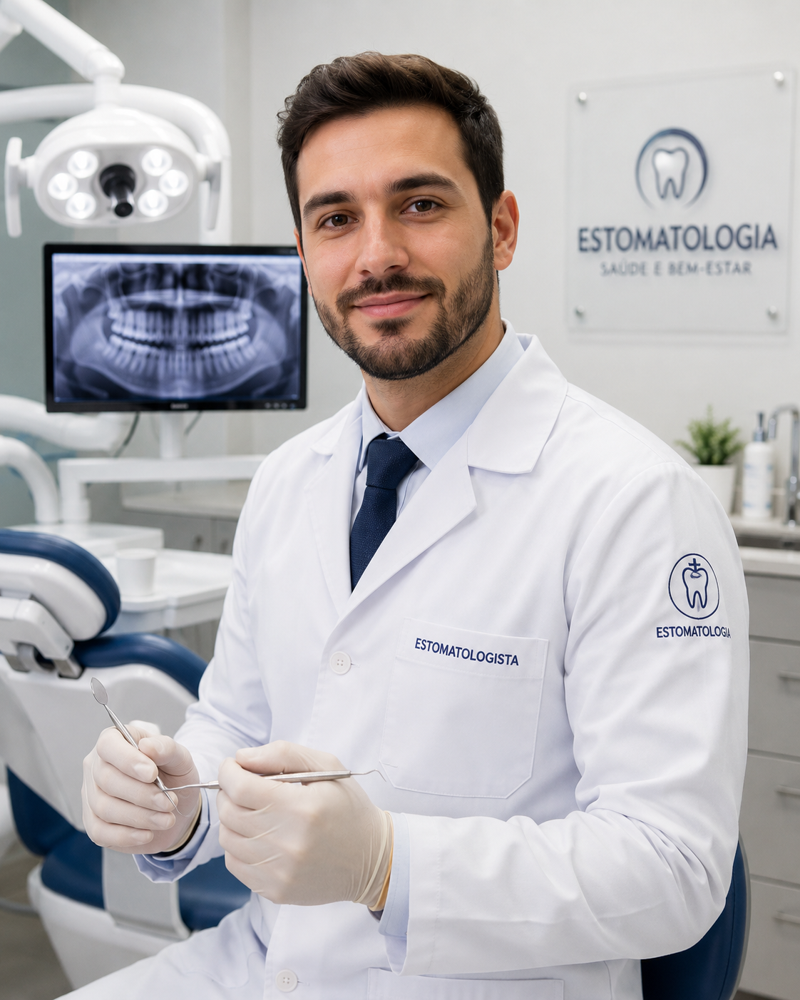

Conte o que sente
Uma conversa simples, no seu ritmo.
Conte o que está sentindo. Eu faço algumas perguntas simples e indico o cuidado mais adequado na rede de São José dos Campos.

ImportanteEste atendimento orienta, mas não substitui o exame presencial com um cirurgião-dentista.
Preencha seus dados para personalizar o cuidado.
Uma conversa simples, no seu ritmo.
Avaliamos sinais que pedem atenção.
Veja onde buscar cuidado na rede.